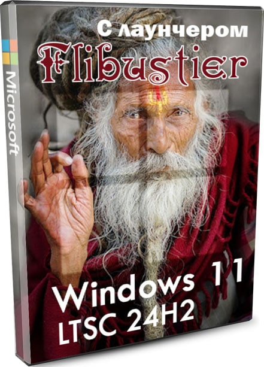
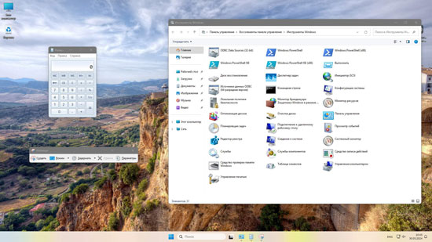
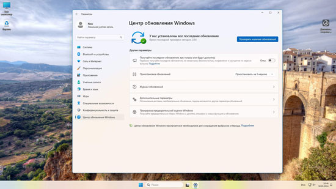
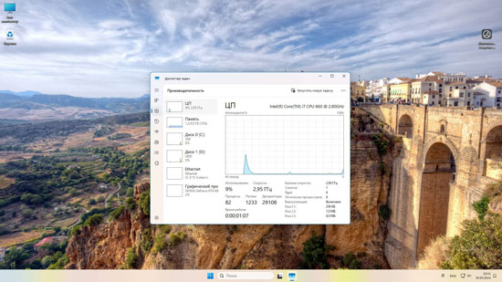
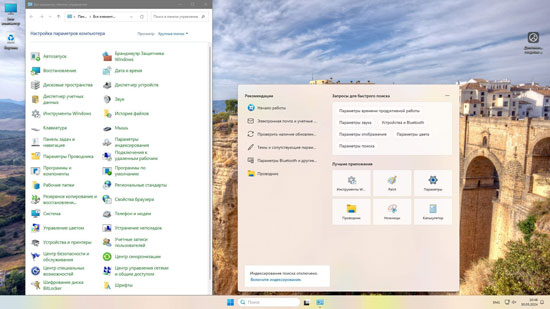
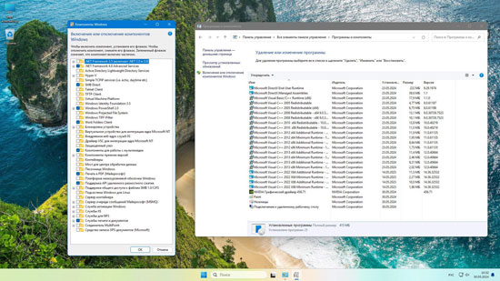
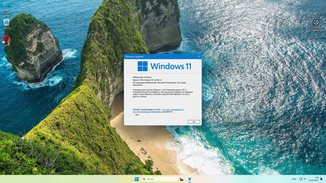
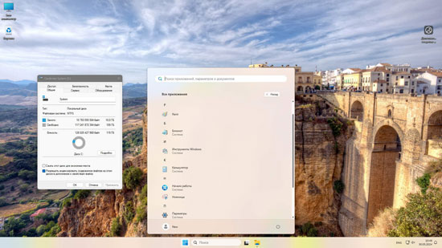
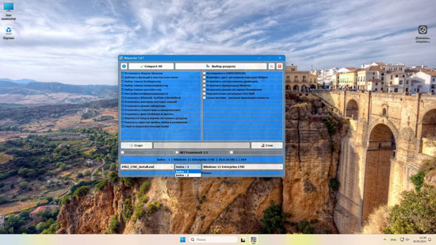

Windows 11 LTSC 24H2 легкая сборка на русском с лаунчером Флибустьера

Самая удобная сборка Windows 11 Pro без TPM 2.0 для всех задач – почти без урезки, со встроенными системными дополнениями скачать образ iso через торрент. Универсальная сборка Виндовс 11 для игр и работы. Телеметрия тщательно блокируется прямо при установке (после дополнительной перезагрузки). Оптимальные проверенные настройки. Наличие самых востребованных плиточных приложений и системных функций. Поддерживаются все программы и возможности без ограничений. И при этом сборка на порядок лучше и быстрее в работе, чем оригинал Windows 11. Конечно, Microsoft почти с каждым апдейтом нагружает винду 11 различными «полезными возможностями» и дополнительными защитами. Поэтому для старого железа версия 23H2 не очень-то и рекомендована, но зато современные компьютеры проявляют все свои лучшие возможности на ней. Вместо Эджа в сборке встроен Яндекс-Браузер, включены новые и старые дополнения для самого разнообразного софта и игр. Блокировка слежки Майкрософт осуществляется полностью автоматически – в отличие от предыдущей приватной Win 10 IoT. Специалисты by Revision всегда стараются избавить пользователя от всех дополнительных сложностей в настройке, поэтому всё изначально обустроено для комфортной работы. По-прежнему не утихают споры, хороша или нет Виндовс 11 в сравнении с «десяткой», но пусть каждый пользователь принимает сам решение в выборе версии. У каждой версии «окон» есть свои плюсы-минусы, поэтому при создании сборки прилагаются усилия, чтобы подчеркнуть преимущества каждой версии и убрать (по возможности) ее недочеты.
{kind=link}

{kind=link}

{kind=link}

{kind=link}

{kind=link}

{kind=link}

{kind=link}

{kind=link}

Новая Windows 11 Корпоративная LTSC 24H2 + IoT Корпоративная LTSC 24H2 легкая и быстрая сборка by Revision с flblauncher от Флибустьера скачать iso образ через торрент. Сборка сделана из свежего официального образа Windows 11 24H2 LTSC EN. Специалисты by Revision перевели эту версию и убрали всё лишнее из нее. Затем вместо стандартного установщика был добавлен flblauncher (крайняя версия от 23H2 Compact). После этого были немного подогнаны и адаптированы скрипты и убраны некоторые ненужные для этой сборки твики из лаунчера. И, наконец, был добавлен скрипт by bulygin-dima, который полностью устраняет Edge Chromium. Также было еще проделано немало процедур для оптимизации и качественного функционирования системы. Как видите, работа была проведена очень основательная над этой сборкой, и надеемся, что вы оцените по достоинству получившийся результат. Кстати, из лаунчера было удалено всё то ПО, на которое ругались антивирусы. Теперь по итогам всех проверок всё полностью чисто, а в роли активатора присутствуют MAS HWID/KMS38 скрипты (самая свежая версия). Сборка тщательно проверена, в том числе, в играх – и работает на высоте. Для многих версия 24H2 LTSC была очень долгожданной. Вы наверняка заметите, насколько тщательно и качественно она переведена на русский. Кроме того, стоит похвалить и размер сборки – 2.48 ГБ, причем система будет обновляться, не восстанавливая при этом Edge. Яндекс-Браузер строго по желанию (опция в левой колонке лаунчера), рискованные твики (например, отключение подкачки) убраны из лаунчера – чтобы система у всех работала стабильно при любом выборе настроек при установке..
Версия: новая Windows 11 LTSC + IoT LTSC (build 26100.1) 24H2 c лаунчером Флибустьера Разрядность: 64-бит Язык Интерфейса: RUS Русский (перевод осуществлен by Revision) Таблетка: опция активации (MAS HWID/KMS38) – не забудьте отметить при установке Первоисточник: www.microsoft.com Автор сборки: by Revision, автор лаунчера – by Flibustier Размер образа: 2,48 GB
Спецификации сборки
-Используется flblauncher для комфортной и функциональной установки.
-UAC будет в режиме автосоглашения (если не отметите опции «Отключить UAC»).
-Отключена изоляция ядра.
-Обеспечено классическое контекстное меню.
-Требования Windows 11 сняты, но советуем только на SSD устанавливать.
-VC++, DirectX встроены
-Защитник + Смартскрин + центр безопасности выключены.
-Система с разрешенным классическим Просмотрщиком, но он не назначен по умолчанию на открытие картинок.
- install.wim сжат в install.esd (чтоб уменьшить итоговый размер iso-образа).
Вырезанные компоненты
-Удален WinRE.wim. Это не система восстановления, а образ восстановления. А функция создания точек восстановления и откатов по ним – оставлена.
-Вырезаны дополнительные txt/речевые сервисы, WMP, Демонстрация Магазина и некоторый другой мелкий мусор.
-Edge автоматически удаляется после установки (при первом запуске отрабатывает скрипт для его удаления от Димы Булыгина - выражаем ему благодарность за этот скрипт).
-Удален SecHealthUI.
Отключение нежелательных заданий Планировщика (Важно!)
Microsoft старается защитить систему так, чтобы различными скриптами нельзя было устранить вредные задания. По идее, лаунчер их должен удалять при установке, но новая версия 24H2 ему не позволила получить доступ к заданиям и удалить ненужные. Поэтому, если хотите удалить нежелательные задания Планировщика (а там и телеметрия, и оценка производительности) – вам нужно это сделать самостоятельно. Для этого находите в «Инструментах Windows» Планировщик заданий, открываете его и отключаете все задания в следующих папках: Application Experience, Autochk, Customer Experience Improvement Program, DiskDiagnostic, Maintenance, Windows Defender. Очень важно проделать эту процедуру, потому что все эти задания абсолютно не нужны и нежелательны для вашего компьютера.
Дополнительная информация
Это быстрая и качественная система – и при этом с долгосрочной поддержкой. Кроме того, в LTSC – максимум функций от Microsoft для Виндовс 11, но при этом плиточного мусора – нет. Эта версия изначально идет с классическим Калькулятором, классическими Ножницами – то есть, это не сборщики их встроили, а сама Microsoft. Сборка сделана на стартовом билде 24H2, и получилось очень удачно удалить из оригинальной системы всё лишнее, не лишив при этом Виндовс способности обновляться. И, конечно же, русский интерфейс изначально – это тоже существенный плюс для данной сборки. Поэтому можно прогнозировать, что этот образ будет довольно востребованным среди многих посетителей нашего сайта. Любители сборок стремятся побыстрее оценить эту новинку от Microsoft, которая в русифицированном и оптимизированном виде еще лучше и удобней. В ISO образах допускается установщик браузера и некоторые пользовательские изменения по умолчнию для браузера Chrome, каждый может без проблем изменить настройки браузера на свои предпочтительные. Все авторские сборки перед публикацией на сайте, проходят проверку на вирусы. ISO образ открывается через dism, и всё содержимое сканируется антивирусом на вредоносные файлы.